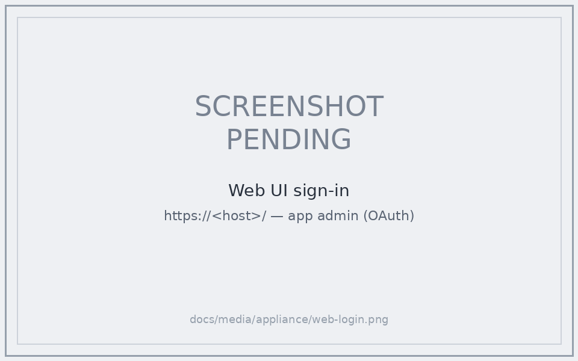
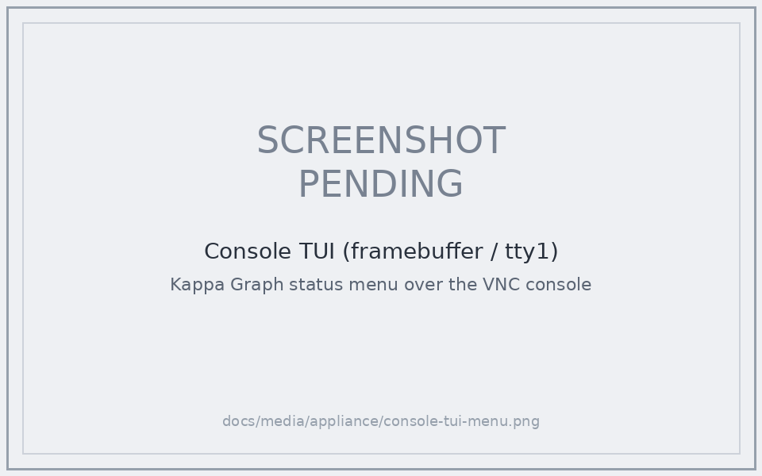
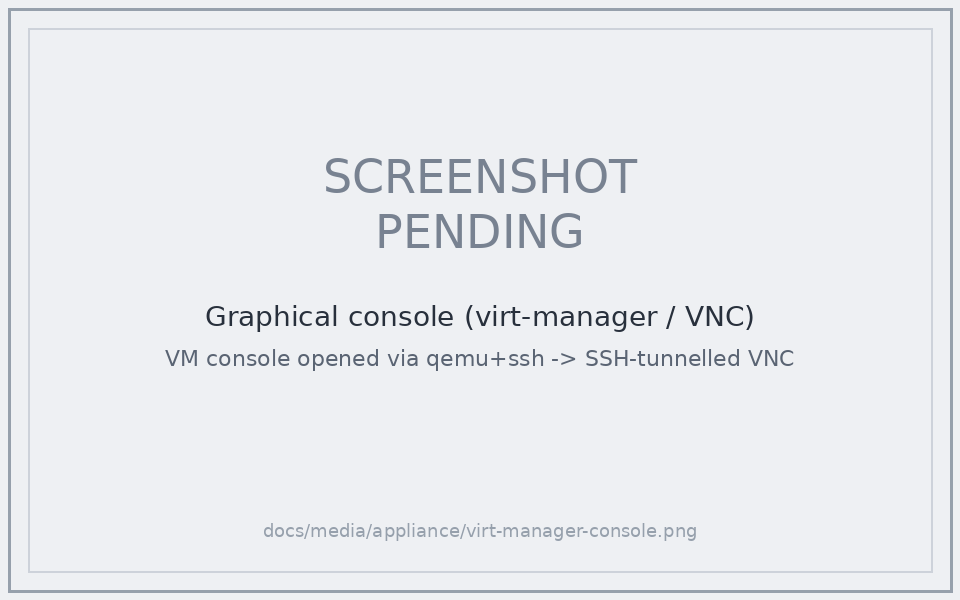
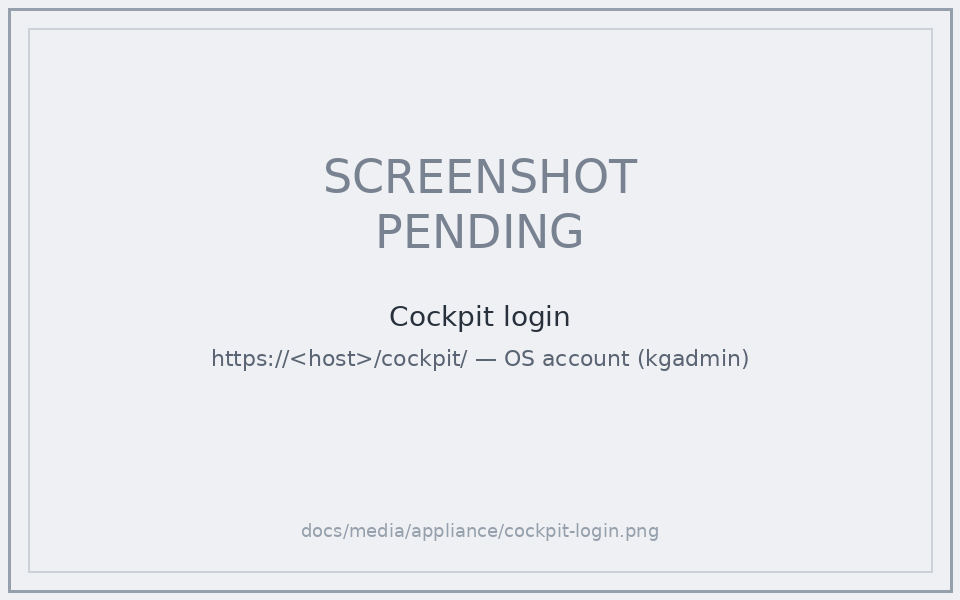
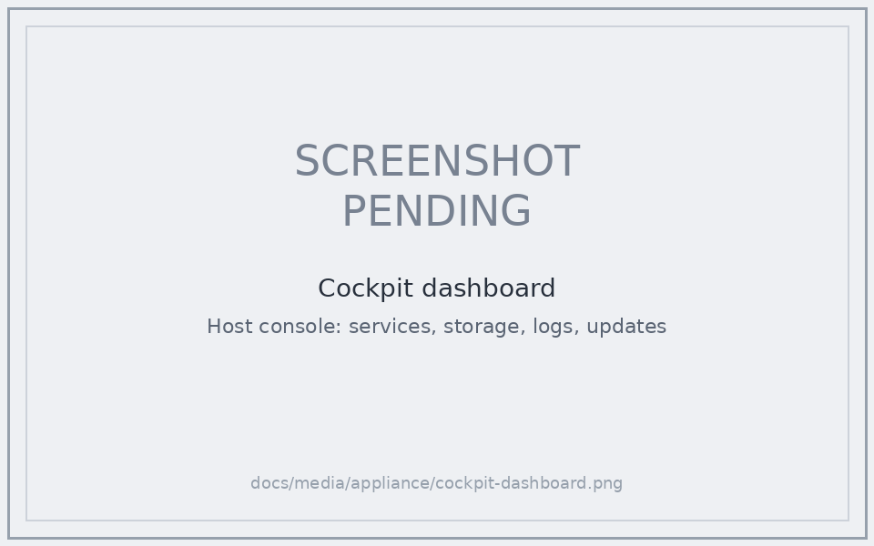

Appliance on libvirt/KVM
How to deploy and manage the x86 thin appliance
(ADR-103)
as a libvirt/KVM guest, with a self-renewing TLS certificate and no inbound
ports. The worked example is the cube deployment (kg.broccoli.house), but the
procedure is generic.
The appliance is thin: container images pull on first boot, secrets are
minted per-instance, and the box carries no baked .env. The image is built by
appliance/build-appliance.sh; this page covers everything after you have a
kg-appliance-*.qcow2.
What you get
- A single VM that boots, mints its own secrets, pulls images, and starts the full stack (traefik / web / api / postgres / garage / operator).
- Self-renewing TLS via in-container ACME DNS-01 (lego + a DNS provider such
as porkbun) — the TLS guide and
ADR-105
cover the cert design. DNS-01 is the only ACME challenge that works for a
private box (RFC-1918, no inbound
:80/:443) that owns a public DNS name. - Management without SSH — the appliance ships no sshd. You drive it through
the qemu-guest-agent, the Cockpit host console (
:9090), or the tty1 console TUI over VNC.
Pick your path
The worked example below (§1–§2) is the declarative seed path — pinned hostname, self-renewing TLS, zero-touch. Most people don't need that. Three paths, by what you're running and which release artifact fits:
| You run… | Use | How |
|---|---|---|
| VirtualBox / VMware / Hyper-V | kg-appliance-<ver>-generic.ova |
the hypervisor's Import Appliance wizard reads the OVF and builds the VM. Use the generic OVA — its console is legible in the VM window; the cloud OVA is 80×25 (see kernel variants). |
| libvirt / Proxmox / QEMU | kg-appliance-<ver>.qcow2.xz |
the native path — no OVA. unxz and virt-install --import (below). |
an .ova you already have, on libvirt |
the .ova |
libvirt has no OVA importer. Prefer the qcow2; or tar -xf the OVA and qemu-img convert its *.vmdk → qcow2. (virt-v2v can import an OVA, but it's a heavyweight guest-conversion tool — overkill for an image that's already KVM-native.) |
On libvirt/qemu the OVA buys nothing — the qcow2 is native and the OVA is pure friction. Reach for
*.qcow2.xz. The OVA earns its keep only where there's an import wizard.
Quick start — qcow2, zero-config (no seed)
# download + decompress into a libvirt pool (e.g. /srv/storage/libvirt/images)
gh release download v<ver> -p 'kg-appliance-<ver>.qcow2.xz' -D <pool-dir>
unxz <pool-dir>/kg-appliance-<ver>.qcow2.xz
sudo virt-install --name kg-appliance --memory 4096 --vcpus 2 --os-variant debian12 \
--import --disk path=<pool-dir>/kg-appliance-<ver>.qcow2,bus=virtio \
--network bridge=br0,model=virtio --graphics vnc,listen=127.0.0.1 \
--channel unix,target_type=virtio,name=org.qemu.guest_agent.0 --noautoconsole
--importstill needs the full VM definition. It only means "boot the disk, no installer" — you must pass--name/--memory/--vcpus/--disk path=…/--network. A barevirt-install --import file.qcow2fails with "unrecognized arguments". In the GUI, use "Import existing disk image" and pick OS Debian 12.
First boot is zero-config: the box takes a DHCP IP, pulls the GHCR images,
mints per-instance secrets, and comes up on http://<ip>:3000 (HTTP, no TLS).
The generated admin password is on the console info menu and in
/root/kg-credentials.txt; a sudo host login (kgadmin) lands there too. Sign in,
set your own admin password, paste a reasoning key — done. Watch it provision on
the console (tty1) or journalctl -u kg-firstboot -f.
Thereafter the box stays current via operator.sh upgrade (pulls fresh GHCR
images) — the OVA/qcow2 is a one-time bootstrap seed, not re-downloaded per
release (ADR-103 /
ADR-119).
Want TLS + a pinned hostname instead of zero-config? That's the declarative seed —
read on.
1. The NoCloud seed — attach it as a VIRTIO disk
Provisioning config (provision.env) reaches the VM through a cloud-init
NoCloud seed: a small ISO with the cidata volume label holding user-data +
meta-data.
Critical: attach the seed as a virtio disk, not a SATA/IDE cdrom. The Debian cloud kernel has no AHCI/SATA driver, so a
sr0/sdaseed is invisible →ds-identifyfinds no datasource → cloud-init is disabled → the box boots with defaults and yourprovision.envis silently ignored.
Build the seed (run where you can write, then copy into the libvirt pool):
mkdir -p ~/kg-seed && cd ~/kg-seed
cat > meta-data <<EOF
instance-id: kg-appliance-01
local-hostname: kg-appliance
EOF
cat > user-data <<'EOF'
#cloud-config
write_files:
- path: /etc/kg/provision.env
permissions: '0600'
content: |
KG_EXTERNAL_URL=https://kg.example.com
KG_TLS_MODE=letsencrypt
KG_ACME_CHALLENGE=dns-01
KG_DNS_PROVIDER=porkbun
KG_LE_EMAIL=you@example.com
KG_PORKBUN_API_KEY=pk1_...
KG_PORKBUN_SECRET_API_KEY=sk1_...
EOF
# label MUST be cidata for NoCloud
xorriso -as mkisofs -V cidata -J -r -o kg-seed.iso user-data meta-data
sudo cp kg-seed.iso /srv/storage/libvirt/images/ # xorriso can't write a root-owned pool dir directly
provision.env is the appliance's single declarative control surface; unknown
keys are ignored. See appliance/files/provision.env.example.
2. Define the VM
sudo virt-install \
--name kg-appliance \
--memory 4096 --vcpus 2 \
--os-variant debian12 \
--import \
--disk path=/srv/storage/libvirt/images/kg-appliance.qcow2,bus=virtio \
--disk path=/srv/storage/libvirt/images/kg-seed.iso,format=raw,bus=virtio,readonly=on \
--network bridge=br0,model=virtio,mac=52:54:00:6e:4a:82 \
--graphics vnc \
--channel unix,target_type=virtio,name=org.qemu.guest_agent.0 \
--noautoconsole
- Bridge, not NAT — put the VM on a real Linux bridge (
br0 ← <nic>) so it gets a routable address and multiple guests can share the NIC. - Pin the MAC to claim a DHCP reservation (and your public DNS A record).
Changing the MAC later is safe — the image matches its NIC by name, not MAC
(see Troubleshooting). To repoint an existing VM:
virsh shutdown kg-appliance && virt-xml kg-appliance --edit --network mac=<reserved> && virsh start kg-appliance. - The
org.qemu.guest_agent.0channel is what lets you manage the box without SSH.
First boot pulls images and provisions — watch with journalctl -u kg-firstboot -f
(via the console). The admin password is written to /root/kg-credentials.txt
inside the VM. Then sign in to the web UI at the external URL:

3. Managing the box without SSH
The appliance has no sshd. Run commands inside the guest through the qemu-guest-agent from the libvirt host. This helper executes a command in the VM and prints its output:
vmx() { # usage: vmx "shell command" [wait_seconds]
local pid
pid=$(sudo virsh qemu-agent-command kg-appliance \
"{\"execute\":\"guest-exec\",\"arguments\":{\"path\":\"/bin/sh\",\"arg\":[\"-c\",\"$1\"],\"capture-output\":true}}" \
| grep -oE '"pid":[0-9]+' | cut -d: -f2)
[ -z "$pid" ] && { echo "(agent busy / not ready)"; return; }
sleep "${2:-3}"
sudo virsh qemu-agent-command kg-appliance \
"{\"execute\":\"guest-exec-status\",\"arguments\":{\"pid\":$pid}}" \
| python3 -c 'import sys,json,base64
d=json.load(sys.stdin)["return"]
for k in ("out-data","err-data"):
if d.get(k): sys.stdout.write(base64.b64decode(d[k]).decode("utf-8","replace"))'
}
vmx "docker ps --format '{{.Names}}: {{.Status}}'"
vmx "cd /opt/kg && ./operator.sh status"
For commands with awkward quoting (heredocs, JSON), base64-encode them:
vmx "echo <base64> | base64 -d | sh". Decode out-data and err-data
separately — they are padded independently, so concatenating before decoding
corrupts the base64.
Other management surfaces:
- Cockpit —
https://<vm-ip>:9090(host console: services, storage, logs, updates). Cockpit authenticates against OS accounts, not the app's OAuth admin. First boot provisions a sudo-enabled login (kgadminby default) — set it declaratively withKG_HOST_LOGIN_USER/KG_HOST_LOGIN_PASSWORDinprovision.env, or let it mint a random password recorded in/root/kg-credentials.txt. Reset it later withsudo /opt/kg/appliance/files/kg-host-login.sh. - virt-manager — connect to
qemu+ssh://<user>@<host>/systemfor lifecycle + the VNC console. The remote graphical console has three wiring requirements (see below) that each fail with an unhelpful message. - Console TUI — tty1 over VNC offers status / logs / restart / credentials / operator shell. Its "Login shell (host)" option drops to a root shell with no password — that's the intended way to a host shell (the serial/SSH root login stays locked).

Remote graphical console (virt-manager / virt-viewer)
Getting the VNC console to open from another machine needs three things lined up. Each failure mode looks different, so they're easy to chase one at a time:
- Key auth the GUI session can use. virt-manager spawns
sshinside your desktop session, which often lacks theSSH_AUTH_SOCKyour terminal has — so it can't see your agent and falls back to a password prompt. Pin the key in~/.ssh/configso no agent is needed (use a passphrase-less key, or ensure the agent is exported to the GUI session): - VNC must listen on
127.0.0.1, not0.0.0.0. With a routable listen address virt-manager tries a direct connection tohost:5900(usually firewalled → "Viewer was disconnected"). Binding to localhost forces it to tunnel over SSH instead — and closes the passwordless-VNC exposure. Set it (takes effect after a full power-off, not a reboot): netcaton the libvirt host. virt-manager's SSH tunnel pipes the VNC socket throughncon the remote host; without it the tunnel dies with "Viewer was disconnected" andsh: line 1: nc: command not found. Install it:pacman -S openbsd-netcat(Arch) /apt install netcat-openbsd(Debian).
Fallback that needs none of virt-manager's auto-tunnel: forward the port yourself and point any VNC viewer at localhost:
ssh -L 5901:localhost:5900 <user>@<libvirt-host> # keep open
remote-viewer vnc://localhost:5901 # or gvncviewer localhost:5901

Cockpit behind Traefik (/cockpit)
Cockpit's own cert on :9090 is self-signed, and HSTS on the main hostname stops
a browser from clicking through it. So the appliance fronts Cockpit through the
same Traefik door at https://<host>/cockpit/, sharing the trusted cert. It's
on by default (KG_COCKPIT_PROXY, when KG_EXTERNAL_URL + KG_TLS_MODE=letsencrypt
are set); =false opts out and leaves Cockpit only on :9090.
How it fits together (Cockpit runs on the host, which Traefik's docker provider
can't see directly):
- kg-cockpit-proxy.sh writes /etc/cockpit/cockpit.conf (UrlRoot=/cockpit,
Origins from KG_EXTERNAL_URL, AllowUnencrypted) so Cockpit serves the
sub-path and accepts the proxied origin's login WebSocket.
- docker-compose.traefik-cockpit.yml adds a tiny socat sidecar that Traefik
routes /cockpit to; it TCP-forwards to the host's :9090 via the Docker
host-gateway. A redirectregex middleware 301s the bare /cockpit → /cockpit/
(Cockpit drops the slashless prefix, which would otherwise surface as a 502).
Log in with the OS account (kgadmin by default — see the host-login section
above). Reset the Cockpit config later with
sudo KG_EXTERNAL_URL=https://<host> /opt/kg/appliance/files/kg-cockpit-proxy.sh.
Gating who can reach it. Cockpit is root-capable, so a source-IP allowlist
sits in front of its PAM login (defense in depth). It defaults to open (works
as-is); lock it to a LAN/VPN/admin range from the console TUI ("Cockpit
/cockpit access control") or:
./operator.sh cockpit-access # show current
./operator.sh cockpit-access private # RFC-1918 only (refuses public IPs)
./operator.sh cockpit-access 192.168.1.0/24,100.64.0.0/10 # custom (subnet + VPN)
./operator.sh cockpit-access open # back to no restriction
Or declaratively at first boot via KG_COCKPIT_ALLOW_CIDRS in provision.env.
A future option is mTLS (a client cert) for a cryptographic gate.
Rotate the host login.
kgadmin's generated password is stored in cleartext at/root/kg-credentials.txtand now also gates/cockpit. After first login, change it (passwd kgadmin) and shred the file.


4. The certificate
With KG_TLS_MODE=letsencrypt + KG_ACME_CHALLENGE=dns-01, Traefik obtains and
auto-renews a real Let's Encrypt cert; operator.sh recert is a no-op. The
cert and ACME account live in a persisted bind-mount (/opt/kg/docker/acme/acme.json)
so renewals survive restarts. Verify from the libvirt host:
echo | openssl s_client -connect <vm-ip>:443 -servername kg.example.com 2>/dev/null \
| openssl x509 -noout -subject -issuer -dates
Worked example: cube
| Property | Value |
|---|---|
| Host | cube (libvirt qemu:///system), bridge br0 ← enp2s0 |
| VM | kg-appliance — 2 vCPU / 4 GiB, virtio qcow2 + virtio seed |
| NIC MAC | 52:54:00:6e:4a:82 → DHCP reservation 192.168.1.82 |
| DNS | kg.broccoli.house → 192.168.1.82 (UniFi) |
| TLS | in-container DNS-01 via porkbun; self-renewing Let's Encrypt cert |
| Manage | qemu-guest-agent (vmx), Cockpit :9090, VNC console |
Troubleshooting
- virt-manager has no "Import OVA" / the OVA won't open — libvirt has no OVA
importer (that's a VirtualBox/VMware/Hyper-V feature). Use the
*.qcow2.xzartifact instead ("Pick your path"), or unwrap the OVA by hand:tar -xf kg-appliance-*.ova && qemu-img convert -O qcow2 *-disk1.vmdk kg.qcow2, thenvirt-install --importthat qcow2. virt-install --import file.qcow2→ "unrecognized arguments" —--importskips the installer, not the VM definition; pass--name/--memory/--vcpus/--disk path=…/--network(see the Quick start). The disk must be--disk path=…, not a bare positional argument.provision.envignored / box came up with defaults — the seed was almost certainly attached as a SATA cdrom. The cloud kernel can't see it; reattach as a virtio disk (§1). Confirm cloud-init found it:vmx "cloud-init status --long"should name aconfig-diskdatasource.- NIC has no address after a MAC change — only affects images predating the
MAC-agnostic networking fix. Current images disable cloud-init's network
rendering and ship a DHCP netplan matched by interface name (
e*), so MAC changes are safe. If stranded, rewrite/etc/netplan/50-cloud-init.yamlto match by name andnetplan apply. - Traefik can't reach Docker (
client version 1.24 is too old) — Traefik v3 hard-codes Docker API 1.24 while Engine ≥25 serves a minimum of 1.40. Current images bakeDOCKER_MIN_API_VERSION=1.24as adocker.servicedrop-in. To fix a running box: write that drop-in andsystemctl restart docker. - TLS stuck on the self-signed default /
acme.jsonempty — Traefik only requests a cert for a declared domain; it does not mint on-demand from SNI. EnsureEXTERNAL_URL/TLS_DOMAINis a public FQDN (notlocalhost) so the letsencrypt overlay'stls.domainsis populated.operator.sh startwarns when it isn't. - virt-manager console "Viewer was disconnected" / asks for a password — the
remote graphical console needs key auth the GUI session can use, VNC bound to
127.0.0.1, andnetcaton the libvirt host. See Remote graphical console.
See also
- Appliance build — building the image
- TLS and Certificates — cert modes and scenarios
- Troubleshooting — general platform issues
- ADR-103, ADR-105